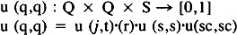
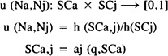
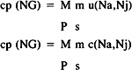
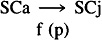
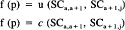

by Abraham Kandel
CRC Press, CRC Press LLC
ISBN: 084934297x Pub Date: 11/01/91
|
|
Fuzzy Expert Systems
by Abraham Kandel CRC Press, CRC Press LLC ISBN: 084934297x Pub Date: 11/01/91 |
| Previous | Table of Contents | Next |
The simple architecture of expert systems includes a data base, a knowledge base, and an inference machine.7 The data base contains an organized collection of permanent and specific data concerned with the particular problem to be solved. The knowledge base is the repository of a codified form of the knowledge about the problem. The inference machine controls and executes all reasoning over the data base and the knowledge base towards, achieving the defined goals.
Recent discussions about the architecture of expert systems8,22,51 have stressed the necessity to introduce descriptions at different levels of abstraction and to represent different kinds of knowledge in order to accurately model a knowledge domain.51
More attention has now been paid to provide systems with more structured organizations, by partitioning knowledge according to its use and by subdividing the reasoning process into steps.8,23 This has stimulated the development of hybrid systems in which different formalisms coexist or are integrated together.1,11,22,23 For instance, framelike formalism may be used for representing typical characteristics (prototypical knowledge) and properties of the entities to be modeled, whereas production rules may be selected in formalizing control knowledge.22,23,51
No matter what approach is to be used, the principle task of the knowledge engineer in the development of any expert system is to obtain and to represent the specialized knowledge to be processed by his particular system.
Animal behavior is accepted as dependent on the distribution that messages have inside the brain. Knowledge representation is obtained through association of neurons, and it is dependent on both the structure of this association as well as on individual properties of each neuron.40 Neural nets are shaped and reshaped by many biological processes depending on how facts are associated.
A neural net may be considered as a fuzzy graph or simplex having the strength of its arcs dependent on the strength of the coupling between the neurons they represent.6,40 The behavior of individual neurons may be assumed equivalent to that of a fuzzy automaton having its family of state membership dependent on both the history of the received stimulation as well as on internal states.40,43
Briefly, any neuron N is assumed to be a fuzzy automaton:
N = (S,SC, Q, m, a)
to which S is the set of inputs or stimuli; SC is the set of outputs or classes of neural responses; Q is the set of neural states; a is the output function:
a: S × SC → [0,1]
and m is the family of state membership (u(q,q)) matrices

That is to say, u(q,q) depends on:
Two neurons Na, Nj are functionally coupled if the output of one of them (i.e., Na) is the input to the other (i.e., Nj)
Na = (SCa, SCj, Qj, mj, aj)
The coupling (u (Na, Nj) between Na and Nj depends on the capacity Na have to trigger different responses on Nj. Because of this u(Na, Nj) is dependent on both the entropy h(SCa, j) transmitted from Na to Nj, as well as on the entropy (h(SCj)) of Nj:

The traffic of messages (c (Na, Nj)) between any pair of neurons Na,Nj is determined by the balance between inhibitory (I) and excitatory (E) actions exercised over them by the incoming messages:
c (Na,Nj) = u (E,Nj) – u (I,Nj)
The neural nets NG are organized in the nervous systems (NS) depending on the neural coupling:
NG = ({SCj}NS, {u (Na,NJ)}NS)
The message distribution on these NGs are dependent on u(Na, Nj); that is to say on the message spreads in operational nets OG defined over NG:
OG = ({SCj}NS, {c(Na,Nj)}NS)
The coupling power of these nets are calculated as:

where M and m stand for the operations realized over parallel (p) and serial (s) pathways, respectively. M could be a max-operation, and m could be a min-operation as preconized by classical fuzzy set theory in the case of logic operators or and and, respectively. However, other functions are more likely to replace these max and min, in order to turn formalization closer to reality.17,22
The fuzzy grammars realized over such nets are fuzzy relation grammars, with productions of the type:

or

where f(p) expresses the dependence on the context.
Let FG denote NG and OG. The fuzzy languages L(FG) defined by these grammars are composed by productions of the type:
L (FG) (n) = M ((p1) m (p2),…,m (pk))
M being taken over all derivation chains from the point basis to the node n.40
| Previous | Table of Contents | Next |